건축기사 (2015-09-19 기출문제)
1과목: 건축계획
1. 상점의 쇼윈도에 관한 설명으로 옳지 않은 것은?
- 평형은 일반적으로 많이 사용되는 기본형으로 상점내의 면적을 넓게 사용할 수 있다.
- 경사형은 유리면을 경사지게 처리하여 단조로움이 적게 되지만 유리면의 눈부심이 크다.
- 상점의 전면이 넓지 않을 경우 일반적으로 쇼윈도와 출입구는 비대칭적으로 처리하는 것이 좋다.
- 곡면형은 곡면유리를 사용하여 쇼윈도의 구성에 변화를 주어 일단 형태감에서 통행인의 시선을 자연스럽게 유도할 수 있다.
(정답률: 68%)

2. 도서관의 출납 시스템 유형 중 이용자가 자유롭게 도서를 꺼낼 수 있으나 열람석으로 가기 전에 관원의 검열을 받는 형식은?
- 폐가식
- 반개가식
- 자유개가식
- 안전개가식
(정답률: 79%)
3. 다음 중 주택의 평면계획 시 사용되는 공간의 조닝방법과 가장 거리가 먼 것은?
- 융통성에 의한 조닝
- 가족 전체와 개인에 의한 조닝
- 정적 공간과 동적 공간에 의한 조닝
- 주간과 야간의 사용시간에 의한 조닝
(정답률: 71%)
4. 극장건축의 그리드 아이언(Grid Iron)에 관한 설명으로 옳은 것은?
- 무대 뒤편의 좁은 통로이다.
- 무대의 배경이 되는 벽면 시설이다.
- 관객의 시선을 차단하는 데 사용된다.
- 조명기구, 배경 등을 매어다니는 데 사용된다.
(정답률: 84%)
5. 아파트의 형식 중 메조넷형에 관한 설명으로 옳지 않은 것은?
- 다양한 평면 구성이 가능하다.
- 소규모 주택에 적용 시 경제적이다.
- 통로가 없는 층은 통풍 및 채광 확보가 용이하다.
- 트리플렉스형은 하나의 주거단위가 3층형으로 구성된 형식이다.
(정답률: 84%)
6. 한국 전통건축물의 공포 양식이 옳게 연결된 것은?
- 남대문－다포 양식
- 동대문－주심포 양식
- 강릉 오죽헌－주심포 양식
- 부석사 무량수전－익공 양식
(정답률: 63%)
7. “렌터블(Rentable)비가 높다.”는 표현의 의미로 가장 알맞은 것은?
- 서비스를 더 좋게 할 수 있다.
- 임대료 수입이 더 증가할 수 있다.
- 주차장 공간을 더 많이 확보할 수 있다.
- 코어부분의 면적을 더 많이 확보할 수 있다.
(정답률: 84%)
8. 다음과 같은 조건에 있는 공동주택을 건설하는 주택단지에 설치하여야 하는 진입도로의 최소 폭은?
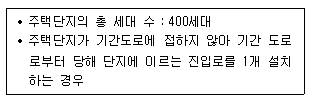
- 6m
- 8m
- 12m
- 15m
(정답률: 73%)
9. 다음은 극장의 가시거리에 관한 설명이다. ( ) 안에 알맞은 것은?
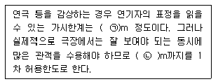
- ㉠ 15, ㉡ 22
- ㉠ 20, ㉡ 35
- ㉠ 22, ㉡ 35
- ㉠ 22, ㉡ 38
(정답률: 90%)
10. 호텔에 관한 설명으로 옳지 않은 것은?
- 터미널 호텔은 교통기관의 발착지점에 위치한다.
- 커머셜 호텔은 스포츠 시설을 위주로 이용되는 숙박시설을 갖추고 있다.
- 리조트 호텔은 조망 및 주변경관의 조건이 좋은 곳에 위치하는 것이 좋다.
- 아파트먼트 호텔은 장기간 체재하는 데 적합한 호텔로서 각 객실에는 주방설비를 갖추고 있다.
(정답률: 87%)
11. 초기 기독교건축의 바실리카식 교회의 실내 공간 구성에 속하지 않는 것은?
- 앱스(Apse)
- 아일(Aisie)
- 네이브(Nave)
- 아키트레이브(Architrave)
(정답률: 62%)
12. 백화점의 엘리베이터 계획에 일반적으로 활용 되는 승객 집중시간은?
- 월요일 개점 직후
- 금요일 폐점 직전
- 토요일 폐점 직전
- 일요일 정오 전후
(정답률: 87%)
13. 평지 주택에 비해 경사지 주택이 갖는 유리한 특성으로 볼 수 없는 것은?
- 통풍
- 조망
- 접근성
- 프라이버시
(정답률: 84%)
14. 다음 중 고층 사무소건물의 기둥 간격 결정의 가장 직접적인 요인이 되는 것은?
- 공조방식
- 동선상의 거리
- 자연광에 의한 조명한계
- 지하주차장의 주차구획 크기
(정답률: 74%)
15. 전시실의 순회형식에 관한 설명으로 옳지 않은 것은?
- 연속순로 형식은 많은 실을 순서별로 통하여야 하는 불편이 있다.
- 연속순로 형식은 소규모의 전시실에 이용하면 적은 대지 면적에서도 가능하고 편리하다.
- 갤러리 및 코리도 형식은 각 실에 직접 들어 갈수 있으며, 필요시 독립적으로 폐쇄할 수 있다.
- 중앙홀 형식은 중심부에 큰 홀을 두고 그 주위에 각 전시실이 배치되어 있으며, 장래 확장이 용이하다.
(정답률: 80%)
16. 장애인 등의 편의시설 중 매개시설에 속하지 않는 것은?
- 주 출입구 접근로
- 유도 및 안내설비
- 장애인 전용주차구역
- 주 출입구 높이차이 제거
(정답률: 75%)
17. 원합리주의로 분류되며 “장식은 죄악이다.”라는 표현을 남긴 근대 건축가는?
- 오토 바그너
- 아돌프 로스
- 르 코르뷔지에
- 미스 반 데 로에
(정답률: 60%)
18. 숑바르 드 로브의 1인당 주거면적기준으로 옳은 것은?
- 병리기준：6m2, 한계기준：12m2
- 병리기준：6m2, 한계기준：14m2
- 병리기준：8m2, 한계기준：12m2
- 병리기준：8m2, 한계기준：14m2
(정답률: 81%)
19. 어느 학교의 1주간의 평균수업시간이 40시간 인데 제도교실이 사용되는 시간은 20시간이다. 그 중 4시간은 다른 과목을 위해 사용된다. 제도교실의 이용률과 순수율은 각각 얼마인가?
- 이용률 20%, 순수율 50%
- 이용률 50%, 순수율 20%
- 이용률 50%, 순수율 80%
- 이용률 80%, 순수율 50%
(정답률: 84%)
20. 종합병원계획에 관한 설명으로 옳지 않은 것은?
- 수술부는 외래와 병동 중간에 위치시킨다.
- 수술실의 바닥은 전기도체성 마감을 사용하는 것 이 좋다.
- 간호사 대기실은 되도록 계단이나 엘리베이터실 등에 인접하여 설치한다.
- 평면계획 시 모듈을 적용하여 각 병실을 모두 동일한 크기로 하는 것이 좋다.
(정답률: 83%)
2과목: 건축시공
21. 각종 유리에 관한 설명으로 옳지 않은 것은?
- 망입유리는 방화, 방재용으로 사용된다.
- 복층유리는 단열 목적의 유리이다.
- 열선흡수유리는 실내의 냉방효과를 좋게 하기 위해 사용된다.
- 자외선 투과유리는 의류품의 진열장, 식품이나 약품의 창고 등에 사용된다.
(정답률: 79%)
22. 금속 커튼월 시공 시 구체 부착철물 설치위치의 연직방향 및 수평방향의 치수 허용차의 표준치로 옳은 것은?
- 연직방향 ±5mm, 수평방향 ±15mm
- 연직방향 ±10mm, 수평방향 ±25mm
- 연직방향 ±15mm, 수평방향 ±25mm
- 연직방향 ±25mm, 수평방향 ±25mm
(정답률: 59%)
23. 조적조 건물의 벽체 균열에 대한 계획, 설계상대책으로 틀린 것은?
- 건축물의 복잡한 평면구성을 피한다.
- 건축물의 자중을 크게 한다.
- 테두리보를 설치한다.
- 상하층의 창문 위치 및 너비를 일치시킨다.
(정답률: 82%)
24. 콘크리트 균열을 발생 시기에 따라 구분할 때 콘크리트의 경화 전 균열의 원인이 아닌 것은?
- 건조수축
- 거푸집 변형
- 진동 또는 충격
- 소성수축, 침하
(정답률: 69%)
25. 공동도급(Joint Venture)방식의 장점에 관한 설명으로 옳지 않은 것은?
- 2명 이상의 업자가 공동으로 도급하므로 자금부담이 경감된다.
- 대규모 공사를 단독으로 도급하는 것보다 적자등 위험부담의 분산이 가능하다.
- 공동도급 구성원 상호 간의 이해충돌이 없고 현장관리가 용이하다.
- 각 구성원이 공사에 대하여 연대책임을 지므로, 단독도급에 비해 발주자는 더 큰 안정성을 기대 할 수 있다.
(정답률: 84%)
26. 가치공학(Value Engineering)기법에서 어떤 개선 활동이나 계획을 세울 때 적용하는 것은?
- 기능설계
- 원가 절감
- 브레인 스토밍
- 공기단축기법
(정답률: 75%)
27. 서중콘크리트에 대한 설명으로 옳은 것은?
- 동일 슬럼프를 얻기 위한 단위수량이 많아진다.
- 장기강도의 증진이 크다.
- 콜드조인트가 쉽게 발생하지 않는다.
- 워커빌리티가 일정하게 유지된다.
(정답률: 66%)
28. 콘크리트 이어붓기에 대한 설명으로 옳지 않은 것은?
- 보 및 슬래브의 이어붓기 위치는 전단력이 작은스팬의 중앙부에 수직으로 한다.
- 아치이음은 아치축에 직각으로 설치한다.
- 부득이 전단력이 큰 위치에 이음을 설치할 경우에는 시공이음에 촉 또는 홈을 두거나 적절한 철근을 내어 둔다.
- 염분 피해의 우려가 있는 해양 및 항만 콘크리트 구조물에서는 시공이음부를 설치하는 것이 좋다.
(정답률: 73%)
29. 철근이음방법 중 철근을 가열하면서 압력을 가하는 방식으로 모재와 동등한 기계적 강도를 가지며 조직의 성분의 변화가 적고 접합강도가 큰 것은?
- 겹침 이음
- 가스 압접
- 나사식 이음
- Cad Welding
(정답률: 83%)
30. 칠공사에 관한 설명 중 옳지 않은 것은?
- 한랭 시나 습기를 가진 면은 작업을 하지 않는다.
- 초벌부터 정벌까지 같은 색으로 도장해야 한다.
- 강한 바람이 불 때는 먼지가 묻게 되므로 외부 공사를 하지 않는다.
- 야간에는 색을 잘못 칠할 염려가 있으므로 칠하지 않는 것이 좋다.
(정답률: 88%)
31. 테라초(Terrazzo) 현장 바름 공사에 대한 내용으로 옳지 않은 것은?
- 줄눈 나누기는 최대줄눈 간격을 2m 이하로 한다.
- 바닥 바름두께의 표준은 접착공법(초벌바름)일 때 20mm 정도이다.
- 갈기는 테라초를 바른 후 손갈기일 때 2일, 기계 갈기일 때 3일 이상 경과한 후 경화 정도를 보아 실시한다.
- 마감은 수산으로 중화 처리하여 때를 벗겨내고, 헝겊으로 문질러 손질한 후 왁스등을 바른다.
(정답률: 56%)
32. 가설공사에서 건물의 각부 위치, 기초의 너비 또는 길이 등을 정확히 결정하기 위한 것은?
- 벤치마크
- 수평규준틀
- 세로규준틀
- 현황측량
(정답률: 72%)
33. 철근, 볼트 등 건축용 강재의 재료시험 항목에서 일반적으로 제외되는 항목은?
- 압축강도시험
- 인장강도시험
- 굽힘시험
- 연신율시험
(정답률: 70%)
34. 칠공사에서 철제 계단(양면칠)의 소요면적 계산식으로 옳은 것은?
- 경사면적×1배
- 경사면적×1.5배
- 경사면적×(2~2.5배)
- 경사면적×(3~5배)
(정답률: 53%)
35. 다음 중 건설공사의 입찰 순서로 옳은 것은?
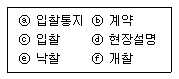
- ⓐ－ⓓ－ⓒ－ⓑ－ⓔ－ⓕ
- ⓐ－ⓑ－ⓔ－ⓕ－ⓒ－ⓓ
- ⓐ－ⓔ－ⓑ－ⓕ－ⓒ－ⓓ
- ⓐ－ⓓ－ⓒ－ⓕ－ⓔ－ⓑ
(정답률: 83%)
36. 한중(寒中) 콘크리트의 양생에 관한 설명 중 옳지 않은 것은?
- 가열 보온양생을 실시할 경우 가열 중 살수를 금한다.
- 타설한 콘크리트는 어느 부분에서도 그 온도를 5℃ 이상으로 하여 초기양생을 실시한다.
- 초기양생은 콘크리트의 압축강도가 5MPa 이상이 얻어진 것을 확인하고 담당원의 승인을 받아 중지한다.
- 타설 후의 콘크리트 온도를 시트, 매트 및 단열거푸집 등에 의하여 계획한 양생온도로 유지하는 것을 단열 보온양생이라 한다.
(정답률: 56%)
37. 웰포인트 공법에 대한 설명으로 옳지 않은 것은?
- 흙파기 밑면의 토질 약화를 예방한다.
- 진공펌프를 사용하여 토 중의 지하수를 강제적으로 접수한다.
- 지하수 저하에 따른 인접지반과 공동매설물 침하에 주의가 필요하다.
- 사질지반보다 점토층 지반에서 효과적이다.
(정답률: 84%)
38. 수량 산출 작업을 함에 있어 효율적인 적산방법이 아닌 것은?
- 수직방향에서 수평방향으로 적산한다.
- 시공순서대로 적산한다.
- 내부에서 외부로 적산한다.
- 큰 곳에서 작은 곳으로 적산한다.
(정답률: 63%)
39. 네트워크(NetWork) 공정표의 장점이라고 볼수 없는 것은?
- 작업 상호 간의 관련성 파악이 용이하다.
- 진도 관리를 명확하게 실시할 수 있으며 적절한조치를 취할 수 있다.
- 작업의 선후관계 및 소요일정 파악이 용이하다.
- 작성 및 검사에 특별한 기능이 필요 없고, 경험이 없는 사람도 쉽게 작성할 수 있다.
(정답률: 85%)
40. 벽두께 1.5B, 벽 면적 20m2 쌓기에 소요되는 기복 벽돌(190×90×57)의 정미량은?
- 2,240매
- 3,360매
- 4,480매
- 6,720매
(정답률: 79%)
3과목: 건축구조
41. 연약지반에서 부동침하를 방지하는 대책으로 옳지 않은 것은?
- 건물을 경량화한다.
- 지하실을 강성체로 설치한다.
- 줄기초와 마찰말뚝기초를 병용한다.
- 건물의 구조강성을 높인다.
(정답률: 67%)
42. 철근콘크리트 구조물 설계를 위해 선형탄성 구조해석을 수행한 결과, 보 단면에 다음과 같은 단면력이 계산되었다. 이 값을 사용해서 계수 휨 모멘트를 구하면? (단, KCI 2012 기준)
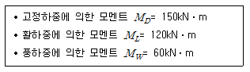
- 288kN · m
- 318kN · m
- 358kN · m
- 378kN · m
(정답률: 47%)
43. 그림의 포물선 아치에서 중앙점(C)의 휨모멘트(Mc) 값으로 옳은 것은?
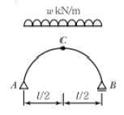
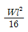
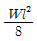
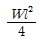
- 0
(정답률: 42%)
44. 그림과 같은 트러스가 절점 C 및 D에서 하중을 지지하고 있다. 이 트러스에서 응력이 발생하지 않는 부재는 어느 것인가?
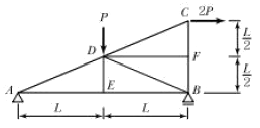
- DF
- DE 및DB
- DE 및DF
- DE, DB 및DF
(정답률: 72%)
45. 다음 ( ) 안에 알맞은 숫자가 순서대로 옳게 짝 지어진 것은?
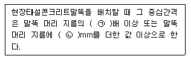
- ㉠ 2.5, ㉡ 750
- ㉠ 2.5, ㉡ 1,000
- ㉠ 2.0, ㉡ 750
- ㉠ 2.0, ㉡ 1,000
(정답률: 55%)
46. 그림과 같은 보의 웨브에 발생하는 최대 전단응력도는? (단, 사용강재는 SS400, 단면 H－250×125×6×9이며, 횡좌굴이 일어나지 않도록 충분히 보강되었으며, 전단면적 산정 시 플랜지 두께는 제외함)
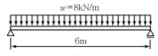
- 24.48MPa
- 17.24MPa
- 14.67MPa
- 9.82MPa
(정답률: 43%)
47. 경간이 4m인 1방향 슬래브에서 양단 연속일 경우 처짐을 계산하지 않은 슬래브의 최소두께는?
- 112mm
- 125mm
- 143mm
- 156mm
(정답률: 63%)
48. 그림과 같은 장방형 기둥에서 사용되는 띠철근의 최소 간격은? (단, 주철근＝D19, 띠철근＝D10)(오류 신고가 접수된 문제입니다. 반드시 정답과 해설을 확인하시기 바랍니다.)
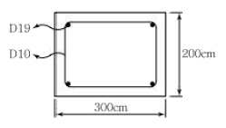
- 150mm
- 200mm
- 300mm
- 400mm
(정답률: 55%)
49. 강도설계법을 근거로 그림과 같은 단극직사각형 보의 최소 철근량을 구하면?(단, fck=21MPa, fy=400MPa)
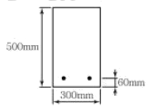
- 354mm2
- 462mm2
- 588mm2
- 643mm2
(정답률: 50%)
50. 철골기둥의 좌굴하중(Critical Bucking Load)을 계산하는데 직접적인 영향을 주지 않는 것은?
- 재료의 항복강도
- 재료의 탄성계수
- 단면 2차 모멘트
- 유효좌굴길이
(정답률: 55%)
51. 밑면 전단력 산정 시 활용되는 지진응답계수를 구성하는 4가지 항목과 가장 거리가 먼 것은?
- 반응수정계수
- 건물의 중요도계수
- 건물의 유효중량
- 건물의 고유주기
(정답률: 52%)
52. 다음 H형강(H－440×300×10×20) 단면의 전소성 모멘트(Mp)는 얼마인가? (단, Fy=330MPa)
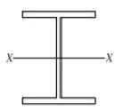
- 1,025kN·m
- 963.6kN·m
- 700.8kN·m
- 575kN·m
(정답률: 48%)
53. 다음 그림과 같은 슬래브에서 직접설계법에 의한 설계모멘트를 결정하고자 한다. 화살표방향 패널 중 빗금 친 부분의 정적 모멘트 Mo를 구하면? (단, 등분포 고정하중 wD=7.18kPa, 등분포활하중 wL=2.39kPa이 작용하고 있으며 기둥의 단면은 300×300mm이다.)
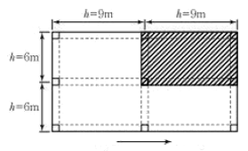
- 406.2kN·m
- 506.2kN·m
- 706.2kN·m
- 806.2kN·m
(정답률: 44%)
54. H형강을 사용한 길이 6m인 단순보에 5kN/m의 등분포 하중 재하 시 최대 처짐량은? (단, Es=206,000MPa, Ix=4,720 cm4, 좌굴의 영향은 없는 것으로 가정)
- 1.70mm
- 5.69mm
- 8.68mm
- 12.49mm
(정답률: 57%)
55. 압축을 받는 이형철근의 기본정착길이(ldb) 가 420mm으로 계산되었다. 해석결과 요구되는 철근량보다 20%를 초과하여 배치한 경우 압축을 받는 이형철근의 정착길이(ld)를 구하면?
- 320mm
- 350mm
- 420mm
- 504mm
(정답률: 45%)
56. 다음 그림과 같은 모살용접 이음부의 설계강도를 구하고, 이 설계강도를 근거로 고정하중PD=40kN, 활하중 PL=30kN이 작용하는 경우에 이음부의 안전성을 옳게 검토한 것은? (단, 강재는 SM490, Fy=325MPa, φ=0.9)
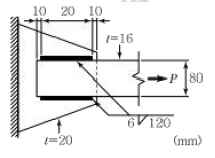
- 설계강도：159.2kN, 검토결과：안전
- 설계강도：79.6kN, 검토결과：안전
- 설계강도：159.2kN, 검토결과：불안전
- 설계강도：79.6kN, 검토결과：불안전
(정답률: 44%)
57. 그림과 같은 강접골조에 수평력 P＝10kN이 작용하고 기둥의 강비 k＝∞인 경우, 기둥의 모멘트가 최대가 되는 위치는? (단, 괄호안의 기호는 강비이다.)
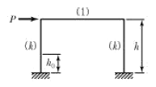
- 0
- 0.5h
- (4/7)h
- h
(정답률: 47%)
58. 건축물에 작용하는 풍압력의 크기를 결정하는 요소와 가장 거리가 먼 것은?
- 건축물의 무게
- 건축물의 높이
- 건축물의 형상
- 풍속
(정답률: 62%)
59. 그림과 같은 원통 단면의 핵반경은?
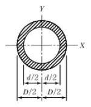
- D+d/6
- D/8
- D+d/8
- D2+d 2/8D
(정답률: 66%)
60. 플랜지에 작용하는 전단력으로 인해 비틀림 모멘트가 생기게 되므로 부재가 비틀림이 없이 휨을 받으려면, 하중의 작용선이 단면의 어느 특정 지점을 지나야 한다. 이 점을 무엇이라 하는가?
- 하중중심(Force Center)
- 비틀림중심(Torsion Center)
- 무게중심(Gravity Center)
- 전단중심(Shear Center)
(정답률: 71%)
4과목: 건축설비
61. 중앙식 급탕방식에 관한 설명으로 옳지 않은 것은?
- 주로 중규모 이상의 건물에 적용하는 방식이다.
- 온수를 사용하는 개소마다 가열장치가 설치된다.
- 직접가열방식, 간접가열방식 및 순간가열방식이 있다.
- 상향 또는 하향 순환식 배관에 의해 필요 개소에 온수를 공급한다.
(정답률: 76%)
62. 저압옥내배선공사 중 직접 콘크리트에 매설할수 있는 공사는?
- 금속관공사
- 금속덕트공사
- 버스덕트공사
- 금속몰드공사
(정답률: 74%)
63. 100명을 수용하고 있는 회의실에서 1인당 CO2배출량이 17L/h일 때 실내의 CO2 농도를 1,000ppm이하로 유지시키기 위한 필요환기량은? (단, 외기의 CO2 농도는 300ppm이다.)
- 약 1,120m3/h
- 약 1,750m3/h
- 약 2,140m3/h
- 약 2,430m3/h
(정답률: 58%)
64. 승객 스스로 운전하는 전자동 엘리베이터로 카버튼이나 승강장의 호출신호로 기동, 정지를 이루는 엘리베이터 조작방식은?
- 승합 전자동식
- 카 스위치 방식
- 시그널 컨트롤 방식
- 레코드 컨트롤 방식
(정답률: 72%)
65. 1,200형 에스컬레이터의 공칭 수송능력은?
- 4,800인/h
- 6,000인/h
- 7,200인/h
- 9,000인/h
(정답률: 68%)
66. 오수의 BOD 제거율이 95%인 정화조로 유입되는 오수의 BOD 농도가 300ppm일 경우, 방류수의 BOD 농도는?
- 15ppm
- 85ppm
- 150ppm
- 285ppm
(정답률: 67%)
67. 전압의 구분에서 저압의 전압 크기 기준은? (단, 교류의 경우)(2021년 변경된 KEC 규정 적용됨)
- 600V 이하
- 1000V 이하
- 1500V 이하
- 2000V 이하
(정답률: 67%)
68. 길이 20m, 지름 400mm인 덕트에 평균속도 12m/s로 공기가 흐를 때 발생하는 마찰저항은? (단, 덕트의 마찰저항계수는 0.02 공기의 밀도는 1.2kg/m3이다.)
- 7.3Pa
- 8.6Pa
- 73.2Pa
- 86.4Pa
(정답률: 26%)
69. 다음의 냉동기 중 기계적 에너지가 아닌 열에너지에 의해 냉동효과를 얻는 것은?
- 원심식 냉동기
- 흡수식 냉동기
- 스크류식 냉동기
- 왕복동식 냉동기
(정답률: 82%)
70. 자동화재탐지설비의 감지기에 관한 설명으로 옳지 않은 것은?(오류 신고가 접수된 문제입니다. 반드시 정답과 해설을 확인하시기 바랍니다.)
- 스포트형 감지기는 45° 이상 경사되지 않도록 부착한다.
- 감지기는 천장 또는 반자의 옥내에 면하는 부분에 설치한다.
- 정온식 감지기는 주방·보일러실 등으로서 다량의 화기를 취급하는 장소에 설치한다.
- 보상식 스포트형 감지기는 정온점이 감지기 주위의 평상시 최고온도보다 10℃ 이상 높은 것으로 설치한다.
(정답률: 57%)
71. 다음과 같은 조건에서 난방부하가 3,500W인 실을 온수난방으로 할 때 방열기의 온수순환수량은?
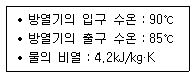
- 300kg/h
- 600kg/h
- 900kg/h
- 1,200kg/h
(정답률: 53%)
72. 변전실 면적에 영향을 주는 요소로 볼 수 없는 것은?
- 수전방식
- 변압기 용량
- 발전기실의 면적
- 기기의 배치방법
(정답률: 66%)
73. 급수방식에 관한 설명으로 옳지 않은 것은?
- 상수도 직결방식은 위생성 측면에서 바람직한 방식이다.
- 고가탱크방식은 중력으로 필요한 곳에 급수하는 방식이다.
- 펌프직송방식 중 변속방식은 토출압력을 감지하여 펌프의 회전수를 제어하는 방식이다.
- 압력탱크방식은 대규모의 급수 수요에 쉽게 대응 할 수 있어 고층 건물에 주로 사용된다.
(정답률: 63%)
74. 이산화탄소의 실내공기질 유지기준으로 옳은 것은? (단, 다중이용시설 중 실내주차장의 경우)
- 200ppm 이하
- 500ppm 이하
- 1,000ppm 이하
- 2,000ppm 이하
(정답률: 59%)
75. 공기조화방식 중 단일덕트방식에 관한 설명으로 옳지 않은 것은?
- 전공기방식의 특성이 있다.
- 냉·온풍의 혼합손실이 없다.
- 각 실이나 존의 부하변동에 즉시 대응할 수 있다.
- 2중덕트방식에 비해 덕트 스페이스를 적게 차지한다.
(정답률: 61%)
76. 트랩의 필요조건으로 옳지 않은 것은?
- 가동부분이 있을 것
- 자정작용이 가능할 것
- 청소가 용이한 구조일 것
- 봉수 깊이는 50mm 이상 100mm 이하일 것
(정답률: 67%)
77. 건축물의 단열계획에 관한 설명으로 옳지 않은 것은?
- 외벽 부위는 내단열로 시공한다.
- 열손실이 많은 북측 거실의 창 및 문의 면적을 최소화한다.
- 외피의 모서리 부분은 열교가 발생하지 않도록 단열재를 연속적으로 설치한다.
- 발코니 확장을 하는 공동주택에는 단열성이 우수한 로이(Low－E) 복층창이나 삼중창 이상의 단열성능을 갖는 창을 설치한다.
(정답률: 75%)
78. 양수량 2m3/min, 전양정 50m, 효율이 60%인 펌프의 축동력은?(단, 유체의 밀도는 1,000kg/m3 이다.)
- 2.77kW
- 9.82kW
- 16.33kW
- 27.22kW
(정답률: 55%)
79. 전기설비용량이 각각 80kW, 90kW, 100kW인 부하설비가 있다. 그 수용률이 70%인 경우 최대수요전력은?
- 63kW
- 70kW
- 189kW
- 270kW
(정답률: 70%)
80. 화재안전기준에 따라 소화기구를 설치하여 야 하는 특정소방대상물의 연면적 기준은?
- 10m2 이상
- 25m2 이상
- 33m2 이상
- 50m2 이상
(정답률: 57%)
5과목: 건축법규
81. 부설주차장의 총 주차대수 규모가 8대 이하인 자주식 주차장의 구조 및 설비에 관한 기준 내용으로 옳지 않은 것은?
- 차로의 너비는 2.5m 이상으로 한다.
- 출입구의 너비는 3m 이상으로 하는 것이 원칙이다.
- 주차대수 6대 이하의 주차단위구획은 차로를 기준으로 하여 세로를 2대까지 접하여 배치할 수 있다.
- 보행인의 통행로가 필요한 경우에는 시설물과 주차단위구획 사이에 0.5m 이상의 거리를 두어야한다.
(정답률: 39%)
82. 국토의 계획 및 이용에 관한 법률에 따른 도시· 군관리계획의 내용에 속하지 않은 것은?
- 광역계획권의 장기발전방향에 관한 계획
- 도시개발사업이나 정비사업에 관한 계획
- 기반시설의 설치·정비 또는 개량에 관한 계획
- 용도지역·용도지구의 지정 또는 변경에 관한 계획
(정답률: 76%)
83. 건축허가신청에 필요한 설계도서 중 평면도에 표시하여야 할 사항에 속하지 않은 것은?
- 주차장 규모
- 승강기의 위치
- 기둥·벽·창문 등의 위치
- 방화구획 및 방화문의 위치
(정답률: 60%)
84. 건축물의 출입구에 설치하는 회전문은 계단이 나 에스컬레이터로부터 최소 얼마 이상의 거리를 두어야 하는가?
- 1m
- 1.5m
- 2m
- 2.5m
(정답률: 78%)
85. 손궤의 우려가 있는 토지에 대지를 조성하는 경우 설치하는 옹벽에 관한 기준 내용으로 옳지 않은 것은?
- 옹벽에는 3m2마다 하나 이상의 배수구멍을 설치 하여야 한다.
- 옹벽의 높이가 2m 이상인 경우에는 이를 콘크리트 구조로 하는 것이 원칙이다.
- 옹벽의 외벽면에 설치하는 배수를 위한 시설은 밖으로 튀어 나오지 않도록 하여야 한다.
- 옹벽의 윗가장자리로부터 안쪽으로 2m 이내에 묻는 배수관은 주철관, 강관 또는 흡관으로 하고, 이음부분은 물이 새지 않도록 하여야 한다.
(정답률: 60%)
86. 주요구조부를 내화구조로 하여야 하는 대상 건축물 기준으로 옳은 것은?(단, 판매시설의 용도로 쓰는 건축물의 경우)
- 해당 용도로 쓰는 바닥면적의 합계가 200m2 이상인 건축물
- 해당 용도로 쓰는 바닥면적의 합계가 500m2 이상인 건축물
- 해당 용도로 쓰는 바닥면적의 합계가 1,000m2 이상인 건축물
- 해당 용도로 쓰는 바닥면적의 합계가 2,000m2 이상인 건축물
(정답률: 48%)
87. 다음의 시가화조정구역 지정과 관련된 기준 내용 중 밑줄 친 ‘대통령령으로 정하는 기간’으로 옳은 것은?
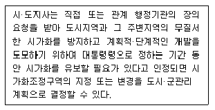
- 5년 이상 10년 이내의 기간
- 5년 이상 20년 이내의 기간
- 7년 이상 10년 이내의 기간
- 7년 이상 20년 이내의 기간
(정답률: 74%)
88. 부설주차장 설치대상 시설물의 종류에 따른 설치기준이 옳지 않은 것은?
- 골프장－1홀당 10대
- 위락시설－시설면적 80m2당 1대
- 판매시설－시설면적 150m2당 1대
- 숙박시설－시설면적 200m2당 1대
(정답률: 79%)
89. 다음은 바닥면적의 산정방법에 관한 기준 내용이다. ( ) 안에 알맞은 것은?
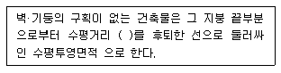
- 0.5m
- 1m
- 1.5m
- 2m
(정답률: 68%)
90. 건축법령상 건축물의 대지에 공개 공지 또는 공개 공간을 확보하여야 하는 대상 건축물에 속하지 않은 것은? (단, 해당 용도로 쓰는 바닥면적의 합계가 5,000m2인 건축물의 경우)
- 종교시설
- 업무시설
- 숙박시설
- 교육연구시설
(정답률: 47%)
91. 문화 및 집회시설 중 공연장의 개별관람석의 출구에 관한 기준 내용으로 옳지 않은 것은? (단, 바닥면적이 300m2 이상인 개별관람석의 경우)
- 관람석별로 2개소 이상 설치할 것
- 각 출구의 유효너비는 1.2m 이상일 것
- 바깥쪽으로의 출구로 쓰이는 문은 안여닫이로 하지 않을 것
- 개별관람석 출구의 유효너비의 합계는 개별 관람석의 바닥면적 100m2마다 0.6m의 비율로 산정한 너비 이상으로 할 것
(정답률: 70%)
92. 주요구조부가 내화구조 또는 불연재료로 된층수가 16층 이상인 공동주택의 경우, 피난층 외의 층에서 피난층 또는 지상으로 통하는 직통계단을 거실의 각 부분으로부터 보행거리가 최대 얼마 이하가 되도록 설치하여야 하는가? (단, 계단은 거실로부터 가장 가까운 거리에 있는 계단을 말한다.)
- 30m
- 40m
- 50m
- 75m
(정답률: 42%)
93. 다음과 같은 직사각형 대지의 대지면적은?
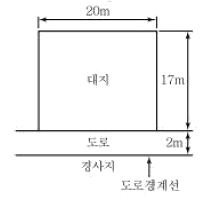
- 280m2
- 300m2
- 320m2
- 340m2
(정답률: 60%)
94. 제1종 일반주거지역안에서 건축할 수 있는 건축물에 속하지 않은 것은?
- 노유자시설
- 제1종 근린생활시설
- 공동주택 중 아파트
- 교육연구시설 중 고등학교
(정답률: 80%)
95. 경형 자동차용 주차단위구획의 최소 크기는? (단, 평행주차형식 외의 경우)(2018년 03월 21일 개정된 규정 적용됨)
- 너비 1.7m, 길이 4.5m
- 너비 2.0m, 길이 5.0m
- 너비 2.0m, 길이 3.6m
- 너비 2.3m, 길이 5.0m
(정답률: 48%)
96. 건축물에 설치하는 지하층의 구조 및 설비에 관한 기준 내용으로 옳지 않은 것은?
- 거실의 바닥면적의 합계가 1,000m2 이상인 층에는 환기설비를 설치할 것
- 거실의 바닥면적이 30m2 이상인 층에는 피난층으로 통하는 비상탈출구를 설치할 것
- 지하층의 바닥면적이 300m2 이상인 층에는 식수공급을 위한 급수전을 1개소 이상 설치할 것
- 문화 및 집회시설 중 공연장의 용도에 쓰이는 층으로서 그 층 거실 바닥면적의 합계가 50m2 이상인 건축물에는 직통계단을 2개소 이상 설치할 것
(정답률: 56%)
97. 태양열을 주된 에너지원으로 이용하는 주택의 건축면적 산정 시 기준이 되는 것은?
- 외벽의 외곽선
- 외벽의 내측 벽면석
- 외벽 중 내측 내력벽의 중심선
- 외벽 중 외측 비내력벽의 중심선
(정답률: 82%)
98. 다음은 일조 등의 확보를 위한 건축물의 높이 제한과 관련된 기준 내용이다. ( ) 안에 알맞은 것은?
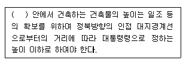
- 전용주거지역과 준주거지역
- 일반주거지역과 준주거지역
- 일반상업지역과 준주거지역
- 전용주거지역과 일반주거지역
(정답률: 67%)
99. 토지의 이용도가 높은 지역의 미관을 유지·관리하기 위하여 필요한 지구는?(관련 규정 개정전 문제로 기존 정답은 3번이었습니다. 여기서는 3번을 누르면 정답 처리 됩니다. 자세한 내용은 해설을 참고하세요)
- 일반미관지구
- 시가지미관지구
- 중심지미관지구
- 역사문화미관지구
(정답률: 76%)
100. 건축법령상 제2종 근린생활시설에 속하지 않는 것은?
- 독서실
- 유치원
- 동물병원
- 노래연습장
(정답률: 56%)
유리면을 경사지게 처리하면 빛이 반사되는 각도가 달라져 눈부심이 줄어들게 된다. 따라서 경사형은 유리면의 눈부심이 적다는 것이 옳은 설명이다.